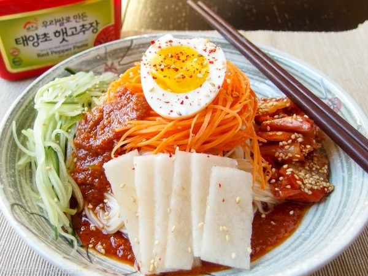
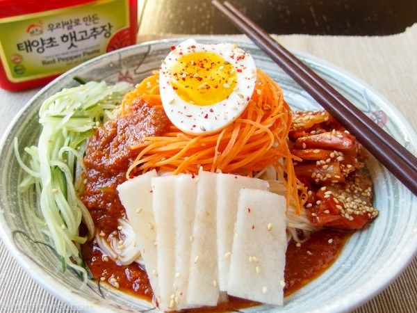

Es un plato frito de fideos somyeon (fideos bien finitos) con distintos vegetales y salsa (hecha con ají molido, ajo y gochijang -una conserva que de chilis que se usa en muchos platillos).
A solo Q25
 
